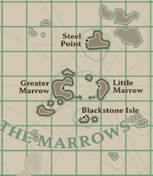
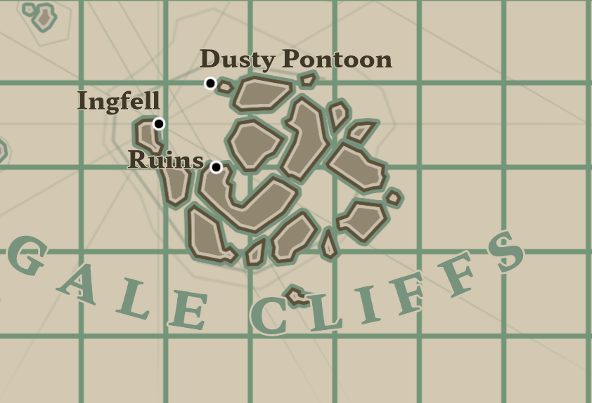
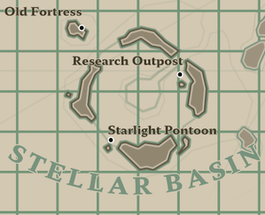
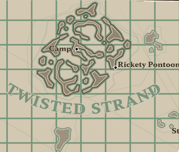
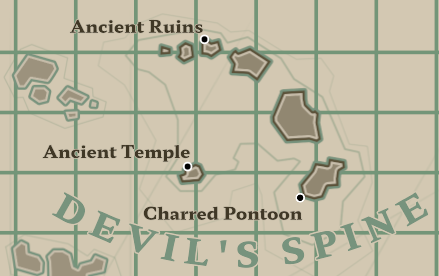
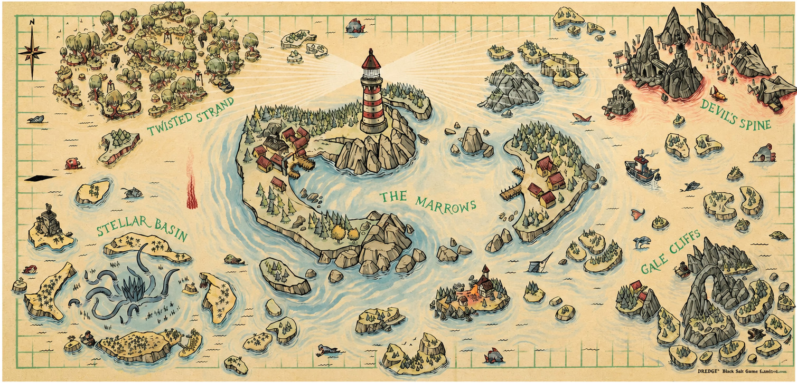

Explora todas las zonas del mundo de Dredge y descubre sus peces, secretos y peligros únicos. Cada región posee criaturas especiales, habitantes misteriosos y mecánicas diferentes.

La región inicial del juego donde comienzas tu aventura y aprendes las mecánicas básicas de navegación, pesca y mejora del barco.
Ver peces
Un enorme archipiélago lleno de rocas peligrosas, fuertes corrientes y criaturas ocultas entre la niebla.
Ver peces
Una zona oceánica profunda y oscura donde habitan criaturas abisales y extrañas anomalías marinas.
Ver peces
Una peligrosa región pantanosa llena de raíces, aguas turbias y criaturas ocultas entre los manglares.
Ver peces
La región volcánica final del juego donde el océano hierve y las criaturas más peligrosas esperan en la oscuridad.
Ver pecesEl mundo de Dredge está dividido en diferentes regiones conectadas entre sí por el océano abierto. Cada zona tiene especies únicas, misiones propias y peligros especiales que cambian la experiencia del jugador durante la exploración.

| Región | Dificultad | Peligro |
|---|---|---|
| Las Vértebras | Baja | Bajo |
| Acantilados del Vendaval | Media | Alto |
| Cuenca Estelar | Alta | Muy alto |
| Manglar Siniestro | Media | Alto |
| Espinazo del Diablo | Muy alta | Extremo |
{kind=link}